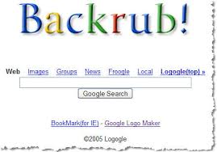

La Historia de Google
La historia de Google es fascinante. Comenzó en 1995 en Stanford, donde Larry Page y Sergey Brin se encontraron y formaron una asociación que cambiaría la historia.
Los comienzos de Google
Page y Brin crearon Backrub, un motor de búsqueda basado en vínculos. Poco después, lo renombraron como Google.
El crecimiento de Google
Recibieron un cheque de $100,000 de Andy Bechtolsheim, marcando el nacimiento de Google Inc.


La expansión de Google
Desde su garaje, Google se trasladó a su sede actual, el Googleplex, en California.

La misión de Google
Hoy, Google organiza la información del mundo a través de productos como YouTube, Gmail, etc...

La historia de Google en números
- 1995: Encuentro de Page y Brin.
- 1996: Creación de Backrub.
- 1998: Cambio a Google y primer financiamiento.
- 2004: Google se hace pública.
- 2010: Fundación de Google X.
- 2016: Inicios en robots autónomos.
12 hitos sobre la historia de Internet
Desde 1969 hasta hoy, estos 12 hitos han transformado nuestra forma de comunicarnos y acceder a la información.
1. Nacimiento de ARPANET (1969)
Personas: Vint Cerf, Robert Kahn.
Descripción: Primera red de computadoras que implementó TCP/IP.

2. Invención del correo electrónico (1971)
Persona: Ray Tomlinson.
Descripción: Introducción del correo electrónico, facilitando la comunicación.

3. Desarrollo de TCP/IP (1983)
Persona: Vint Cerf.
Descripción: Protocolo fundamental para la comunicación en Internet.
4. Primer dominio registrado (.com) (1985)
Descripción: Se registró "symbolics.com", el primer dominio de nivel superior.
5. Aparición de la World Wide Web (1991)
Persona: Tim Berners-Lee.
Descripción: Creación de un sistema de información basado en hipervínculos.


6. Primer navegador web (1993)
Persona: Marc Andreessen.
Descripción: Lanzamiento de Mosaic, popularizando la navegación web.
7. Fundación de Amazon (1994)
Persona: Jeff Bezos.
Descripción: Lanzamiento de Amazon como librería en línea.

8. Lanzamiento de Google (1998)
Personas: Larry Page, Sergey Brin.
Descripción: Revolucionando la búsqueda de información.

9. Establecimiento de Wi-Fi (1997)
Descripción: Introducción de Wi-Fi para conexiones inalámbricas a Internet.
10. Redes sociales emergentes (2003-2004)
Personas: Mark Zuckerberg, Tom Anderson.
Descripción: Creación de plataformas que cambiaron la interacción en línea.

11. Popularización del smartphone (2007)
Persona: Steve Jobs.
Descripción: Lanzamiento del iPhone, transformando el acceso a Internet.
12. Desarrollo de IA y Big Data (2010s)
Descripción: Avances en inteligencia artificial y análisis de datos.

¿Por qué elegí HTML y Visual Studio Code?
HTML
- Fundamental: Base para crear páginas web y organizar contenido.
- Accesible: Estándar ampliamente aceptado, garantizando compatibilidad.
Visual Studio Code
- Potente: Herramientas de depuración y soporte para múltiples lenguajes.
- Eficiente: Integración con Git y terminal para un flujo de trabajo ágil.
Conclusión
Ambas herramientas son esenciales para el desarrollo web, mejorando la productividad y la calidad de mis proyectos.